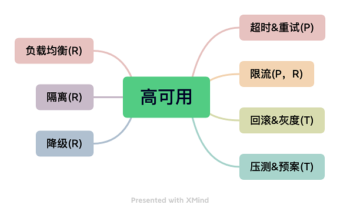
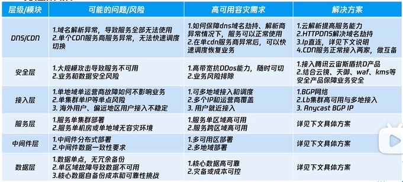

目录 #
原理 #
CAP #
CP系统: hbase, zookeeper AP系统: cassandra, eureka
nPRT公式 [1] #
可以推导出风险期望的公式 #
控制风险的4大因素（nPRT） #
- 减少风险数量，n
- 降低风险变故障的概率（即：增加风险变故障的难度），P
- 减小故障影响范围，R
- 缩短故障影响时长，T
高可用架构设计的7大核心原则 #
- 少依赖原则：能不依赖的，尽可能不依赖，越少越好（n）
- 弱依赖原则：一定要依赖的，尽可能弱依赖，越弱越好（P）
- 分散原则：鸡蛋不要放一个篮子，分散风险（R）
- 均衡原则：均匀分散风险，避免不均衡（R）
- 隔离原则：控制风险不扩散，不放大（R）
- 无单点原则：要有冗余或其他版本,做到有路可退（T）
- 自我保护原则：少流血，牺牲一部分，保护另外一部分（P&R&T）

可用性 7 级图表 [成熟度] [5] #
当一个服务挂了的时候
- 第一级：Crash with data corruption, destruction.
- 第二级：Crash with new data loss.
- 第三级：Crash without data loss. 数据高可用-冗余, destruction 测试
- 第四级：No crash, but with no or very limited service, low service quality.
流控系统， eg. 秒杀流量漏斗 - 第五级：Partial or limited service, with good to medium service quality.
- 第六级：Failover with significant user visible delay, near full quality of service
容灾，恢复慢 - 第七级：Failover with minimal to none user visible delay, near full quality
异地容灾
高可用-研发 #
容量规划和评估 [7] #
[chat] 容量规划和评估的概念和流程。 容量评估是评估系统需要应对的业务体量，包括请求量、高峰峰值等，可以根据历史数据或产品预估来进行。容量规划则是在系统设计时就要考虑容量问题，规划好系统能够抗多少的量级，涉及到系统架构设计和资源分配等问题。而性能压测则是为了确保容量规划的准确性，通过压测来测试系统的性能指标，如QPS和响应耗时，以确定系统是否能够承受实际业务流量。
性能压测要关注的指标很多，但是重点要关注是两个指标，**一个是 QPS、一个是响应耗时，**要确保压测的结果符合预期。
QPS 预估（漏斗型） [7] #
[chat] QPS预估中的漏斗型预估方法。 漏斗型预估是根据请求的层面和模块来构建漏斗模型，预估每个层级的QPS量级，随着请求链路的下行，QPS量级会逐步减少。预估的层级包括服务、接口、分布式缓存等各个层面，最终构成完整的QPS漏斗模型。漏斗型预估方法可以帮助我们更准确地预估系统承载的QPS量级，从而做出更合理的容量规划和评估。
QPS 预估（漏斗型）就是需要我们按照请求的层面和模块来构建我们的预估漏斗模型，然后预估好每一个层级的量级，包括但不限于从服务、接口、分布式缓存等各个层面来预估，最后构成我们完整的 QPS 漏斗模型。
高可用-服务分层 #
分层解析 [6] #

接入层 [2] [R] #
- 地域&错误感知自动 failover 视 endpoint 健康度自动 failover 一定比例流量至其他可用区/地域，直至 endpoint 全部不健康时 100% 流量自动 failover 至其他可用区/地域。
- 地域感知流量分发 distribute eg. 上海一区和上海二区按照 80% 和 20% 的比例分发
服务层 应用层 [6] #
-
关注点 [7]
- 无状态和负载均衡设计
- 弹性扩缩容设计
- 异步解耦和削峰设计（消息队列）
- 故障和容错设计
- 过载保护设计（限流、熔断、降级）
-
传统应用高可用
- CLB+CVM+AS
- 架构图 [pic]
- 应用实践
- CLB+CVM+AS
-
云原生应用部署
- 涉及的产品
- 微服务平台 TSF
- API网关
- TKE容器服务
- 云原生应用部署方案[pic]
- 涉及的产品
-
应用的容灾设计 [pic 要重新看]
- 单区域容灾
- 跨地域容灾
- 跨地域多活 业务拆分, 单元化部署
- 混合云部署 云上和IDC各部署一套完整的业务系统
- 异地多活set化部署 Unit由多个set组成 建议单写多读的架构 set不一定限制在一个机房，可跨机房、跨地域部署
-
系统中的高可用
- Kubernetes 之 master高可用集群搭建
- Redlock - redis分布式锁的高可用
- 百亿规模API网关服务Shepherd的设计与实现
- 服务隔离
集群隔离 请求隔离 - 稳定性
流量管控, 请求缓存, 超时管理, 熔断降级
- 服务隔离
中间件层 #
- kafka 高可用
- zk高可用
- 系统中的高可用
面试|图解 kafka 的高可用机制 isr
数据层 [3] [P] #
-
数据复制
- 主从复制
- 同步复制，异步复制
- 复制日志的实现： 基于语句到复制， 基于wal的传输， 基于行的逻辑日志复制 eg. mysql， redis， hbase
- 复制滞后问题
- 多主复制
- 无主复制
- 主从复制
-
一致性和共识 raft - etcd zab - zookeeper
-
系统中的高可用
MySQL 同步复制及高可用方案总结 MHA, MMM
这可能是目前最全的Redis高可用技术解决方案总结 Master-slave, Cluster
干货 | 阿里巴巴HBase高可用8年抗战回忆录
etcd - raft
高可用-运营[7] #
灰度发布 #
监控+告警 #
安全性、防攻击设计 #
故障演练（混沌实验） #
接口拨测+巡检 #
参考 #
- 高可用的本质
- 云原生应用负载均衡系列 (2): 入口流量分发、容错与高可用调度 istio
- «数据密集型应用系统设计» 5章, 9章
- «亿级流量 网站架构核心技术» 1.4
- 来自 Google 的高可用架构理念与实践
- {% post_link ’tencentTCP3’ %} self
- 高可用架构和系统设计经验 腾讯 ***